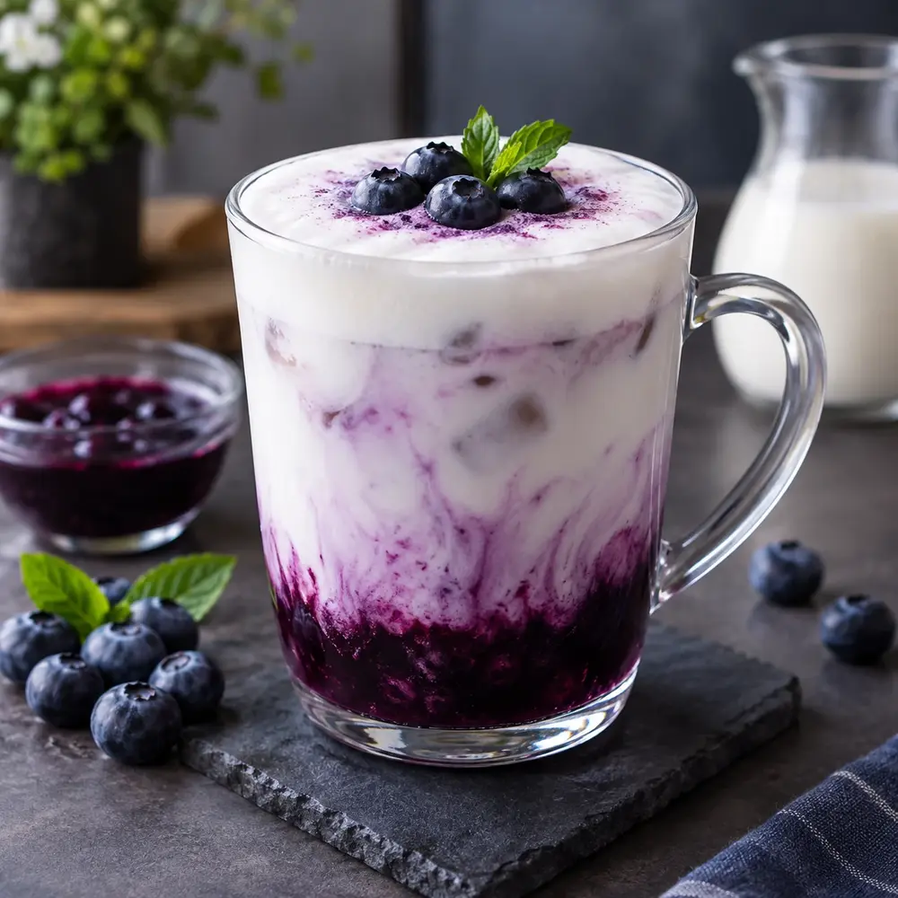

自家焙煎のコーヒー
浅煎りから深煎りまで3種類。豆の個性に合わせて、一杯ずつハンドドリップで淹れます。
浅煎りから深煎りまで3種類。豆の個性に合わせて、一杯ずつハンドドリップで淹れます。
スコーンやチーズケーキは店内で焼き上げ。自家製ブルーベリーソースを使った限定品も登場します。
窓際のカウンター席と、ゆったりしたテーブル席。読書や作業にもご利用ください。

季節限定 NEW
甘酸っぱい自家製ブルーベリーソースに、まろやかなミルクとエスプレッソを重ねました。混ぜるほどに色が変わる、初夏だけの一杯です。
680円（税込）
販売期間：6月1日〜8月31日（※架空の店舗のため実際の販売はありません）
※サンプルサイトのため、電話番号・地図サービスへのリンクは掲載していません。